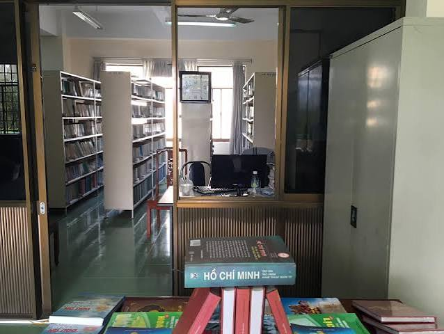

Giới thiệu về website

GÁC SÁCH 12
Gác Sách 12 – Nơi tri thức bắt đầu, ước mơ tiếp nối
Chào mừng bạn đến với Gác Sách – không gian trực tuyến dành cho những học sinh yêu sách và mong muốn khám phá thế giới tri thức. Website được xây dựng với mong muốn đưa sách đến gần hơn với học sinh THPT.
Tại đây, bạn có thể khám phá những cuốn sách ý nghĩa và tham gia các thử thách thú vị để từng bước hình thành thói quen đọc sách mỗi ngày.